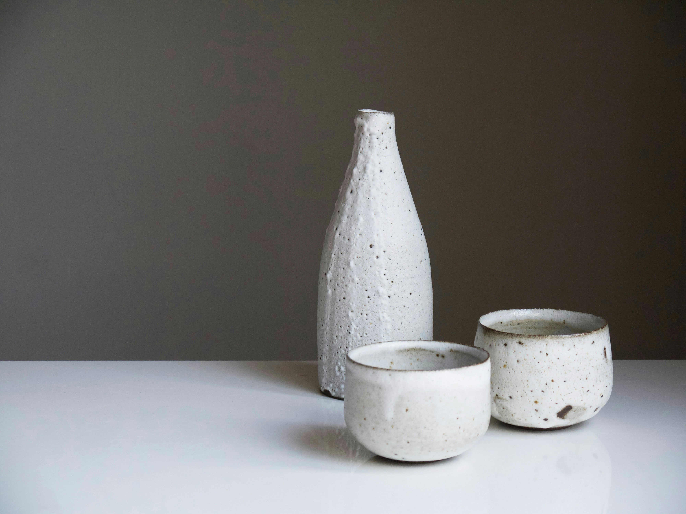
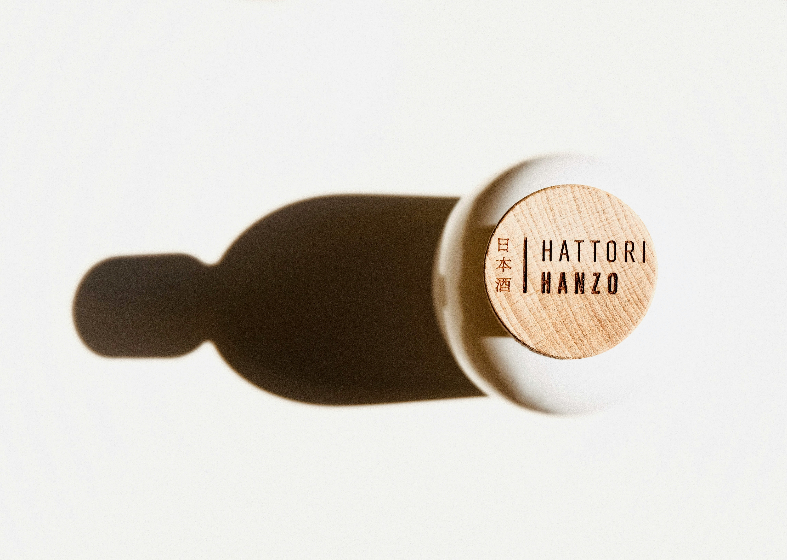
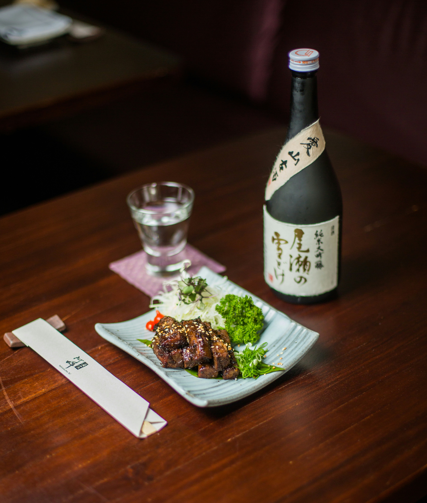

香りの立ち方
盃に近づけた瞬間に静かにほどける香り。第一印象の品格を大切にしています。

Introduction
大山酒造所が届けたいのは、単なる商品情報ではありません。 水、米、手仕事、そして食卓との関係までを含めた、 一つの体験としての日本酒を伝えます。
About
山あいの自然に抱かれた土地で、受け継がれてきた手仕事を大切に 酒を造り続けています。派手さよりも、飲むほどに良さが伝わること。 食卓に寄り添い、後味まで美しく整うこと。それが私たちの目指す酒です。
山あいの清冽な伏流水を生かし、透明感のある口当たりへ仕上げます。
味わいの輪郭をつくる原料を丁寧に選び、その持ち味を無理なく引き出します。
香り、旨み、後味まで流れよくつながる、静かな品格を大切にしています。
Craft
香り、口当たり、旨み、余韻。そのどれか一つを強くするのではなく、 全体のバランスを整えることを重視した酒造りです。

盃に近づけた瞬間に静かにほどける香り。第一印象の品格を大切にしています。

一口目のやわらかさと、喉を抜けるまでのなめらかさを丁寧に整えています。

飲み終えたあとも騒がしく残らず、静かに記憶へ残る後味を目指しています。
Lineup

Junmai Daiginjo
華やかな香りと澄んだ口当たり。大山酒造所を代表する、贈答にもふさわしい一本です。

Tokubetsu Junmai
米の旨みを穏やかに感じながら、後味は軽やか。日々の食卓に寄り添う定番の一本です。

Seasonal
季節の空気を映した数量限定酒。旬の食材やもてなしの席に寄り添う一本です。
Pairing
白身魚、焼き魚、煮物、祝い膳。和の食卓と合わせたときにこそ、 酒の魅力はより深く伝わります。大山酒造所では、 料理と寄り添う美しいバランスを大切にしています。

Season
芽吹きの季節にふさわしい、軽やかで透明感のある味わい。
冷やして楽しむことで、清涼感とキレが際立つ一本。
食が深まる季節に寄り添う、落ち着いた旨みと余韻。
温度によって表情を変え、静かな温もりを感じさせる味わい。

Gift
お中元、お歳暮、記念日、祝いの席など、大切な場面に選ばれる酒として、 贈答用のご相談も承っております。味わいだけでなく、 贈る意味まで伝わる一本をご案内します。
News
軽やかな香りと透明感のある味わいを楽しめる、数量限定酒をご用意しました。
季節のご挨拶やお祝いの席に向けた、贈答包装対応を承っております。
見学日程やお申し込み方法について、詳細をご案内しております。
Contact
商品に関するご相談、贈答のご依頼、お取引に関するお問い合わせなど、 各種ご相談を承っております。